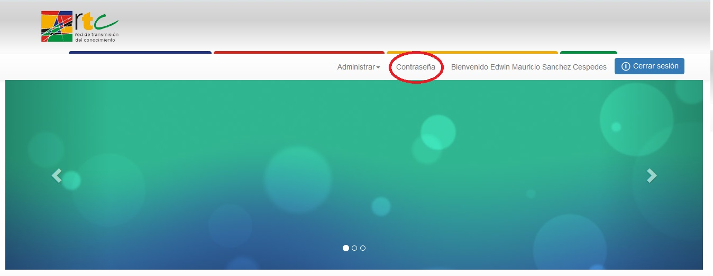
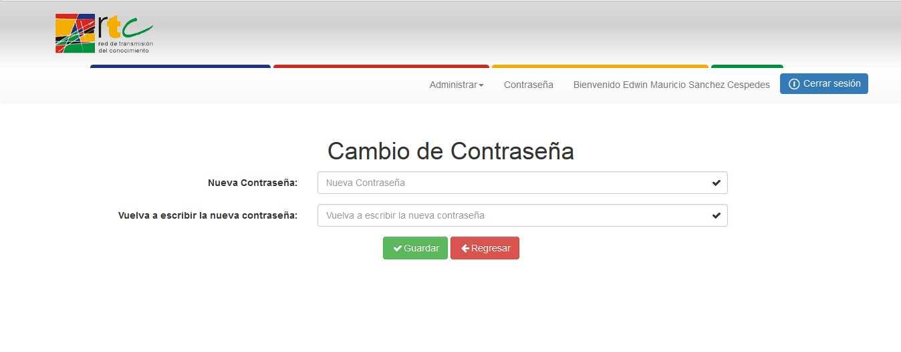

El usuario con rol de administrador podrá hacer el cambio de la contraseña para tener una mayor seguridad.

Al seleccionar la opción "Contraseña", se generara un formulario con dos campos de texto, en los cuales se debe escribir la contraseña nueva.

Created with the Personal Edition of HelpNDoc: Generate EPub eBooks with ease